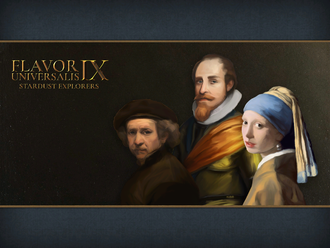

| 趣味风云 | |
|---|---|
 | |
| LOGO | |
| 别名/游戏中名称 | Flavor Universalis |
| 类型 | 基于原版内容的部分修改 |
| 作者 | BigBoss |
| 版本 | 1.33 |
| 论坛/贴吧 | Discord |
| STEAM创意工坊 | 2372292648 |
{kind=link}
剧本
| 剧本名 | 介绍 | 推荐国 |
|---|---|---|
| 以 重振 |
||
| 让我们聚集在 通过收复刚刚失去的阿拉伯半岛西南部的领土来重建 |
||
| 体验 第二个作为本次更新焦点的国家非 |
||
| 示例 | 示例 | |
| 示例 | 示例 | |
| 示例 | 示例 | |
| 示例 | 示例 | |
| 领导萨法维朝着命中注定的伟业前进，将 扮演 |
||
| 低地诸国的地位尚难确定。好人腓力的健康每况愈下，无能的查理登临大宝，预示着为独立而斗争的 体验为两个低地小国精心打造且独具特色的任务树，以及 |
||
| 意大利即将踏上科技、艺术与人文主义的繁荣旅程，也即人尽皆知的“文艺复兴”。佛罗伦萨最为杰出的领袖与美第奇王朝的始祖，科西莫·德·美第奇，正名列意大利最为著名的艺术赞助人与知识藏家之前茅。他采撷学识、招揽英才，在遍及半岛的经济繁荣的助益下将要开启历史上最为辉煌的纪元之一。
然而@LAN§Y佛罗伦萨§!绝非安然无虞，其四境遍邻贪婪诡诈之敌。为权利奋战，藉由§M征服§!或§M外交§!手段一统意大利，以@TUS§Y托斯卡纳§!之名将这一地区置于公正的共和国治下，享用超过30个新§Y事件§!与28个新§Y任务§!！ |
新的国家
 伦巴第
伦巴第
 埃兰那
埃兰那
 联合王冠
联合王冠
拜占庭
拥有专属任务的国家
{kind=link}
许多任务树的完整内容需要特定的DLC才能使用。一些任务树中的部分任务，不是对所有使用该任务树的国家都可用，而只在一定条件下才能使用，例如成立某个国家后才能使得任务树得到扩展。详细情况清参看表格中的“备注”。
为了方便阅读和查找，将所有专属任务按其所属国家的地理分区进行分组列出。
趣味风云理念
| 趣味风云 |
| +20% 骑兵作战能力 -25% 造核花费 |
| -5% 科技花费
|
|
|
| 趣味风云 |
此信息可能已落后版本，最后更新于1.31 ----
|
| +15% 贸易效率 +15% 陆军火力伤害 |
| +3 容忍异端
|
|
|
| 荷兰东印度公司的理念 |
此信息可能已落后版本，最后更新于1.32 ----
|
| +20% 省份贸易竞争力修正 +25 全局移民增长 |
| +15% 全局贸易竞争力
|
|
|
| 趣味风云 |
此信息可能已落后版本，最后更新于1.32 ----注释
是 |
| -10% 发展成本 +10% 步兵作战能力 |
| +5% 行政效率
|
|
|
| 趣味风云 |
此信息可能已落后版本，最后更新于1.32 ----注释
是 |
| +3 正统信仰容忍 +1 顾问池 |
| +20% 要塞防御
|
|
|
| 趣味风云 |
此信息可能已落后版本，最后更新于1.32 ----注释
是已经完成 |
| -20% 造核花费 20% 人力恢复速度 |
| +25% 陆军规模上限修正
|
|
|